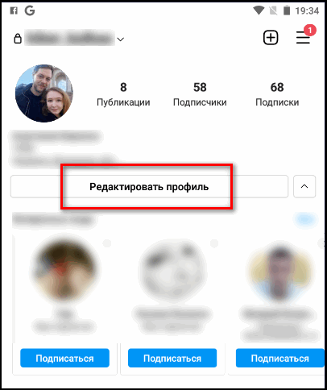
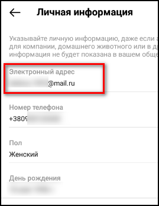
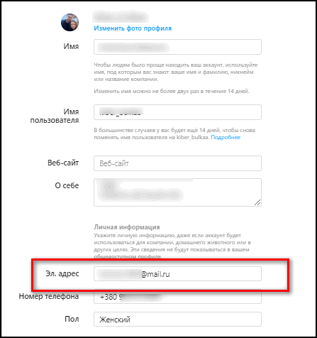
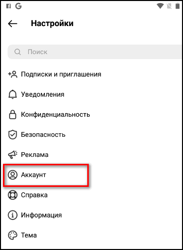
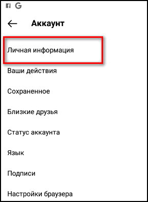
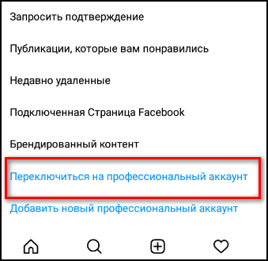

Как узнать и где посмотреть к какой почте привязан Инстаграм

Узнать к какой почте привязан Инстаграм* возможно через раздел: «Личная информация». Или же посмотреть среди последних сообщений: не было ли там регистрационного письма. Подключение email необходимо не только владельцам личный аккаунтов, но и тем, кто управляет бизнес-страницей.
Как узнать почту к которой подключен Инстаграм*
При регистрации пользователям рекомендовано добавлять не только номер телефона, но и адрес электронной почты. Такие меры введены, чтобы дополнительно защитить учетную запись и у владельца всегда был вариант, как восстановить в случае потери телефона.
Если владелец забыл, какой email он указывал при регистрации учетной записи, достаточно перейти к настройкам:
- Зайти в Инстаграм* – Настройки.
- Аккаунт – Личная информация.

- Адрес электронной почты.

Через эту вкладку можно посмотреть, какой email был подключен ранее и отредактировать его. Второй вариант, как посмотреть свой адрес электронной почты:
- Зайти в Инстаграм* с компьютерной версии.
- Перейти в раздел: «Мой профиль» - Изменить.

- Email.
Далее, пользователь может скопировать или, как и с мобильной, изменить на другой. Но чтобы поменять свой адрес, нужно чтобы старый email был активен и доступен.
Как привязать страницу к новому email
Если нужно изменить адрес электронной почты – это доступно через разделы редактирования персональной информации. Как воспользоваться:
- Перейти в Инстаграм* – Мой профиль.
- Изменить – Email.
- Нажать по ранее подключенному – указать новый эмейл.
- Подождать, пока на старый поступит письмо с подтверждением.
- Сохранить введенные данные.
Чтобы подключить новый, нужно проверить корректность написания старого и его актуальность. К примеру, если почтовый сервис, предоставляющий ящики, уже неактивен или удален – поменять данные возможно через обращение к технической поддержке.
Если почта удалена или недоступна
Есть способ получения кода по номеру телефона. Привязать Инстаграм* к другой почте возможно, если у владельца включены все средства защиты аккаунта. Или, если заменить адрес электронной почты через раздел: «Личная информация» - подтверждения со старого ящика не пригодится. Как отредактировать данные учетной записи:
- Зайти в Настройки – Аккаунт.

Личная информация – Email.- Ввести новый – Далее.

- Получить на новую почту комбинацию для подтверждения.
- Ввести в свободное поле – подтвердить.
Далее, все новости и рассылка будет перенаправлена на новый ящик. Недостаток такого способа только в том, что если управление над страницей окажется у третьих лиц – они смогут также поменять регистрационные данные.
Поэтому подключение нескольких способов защиты обезопасит фотографии, переписки и другую информацию о владельце.
Не приходит сообщение от Инстаграма*
Если пользователь отправил запрос на смену эмейла, но письмо так и не появилось. Может быть несколько причин, почему так произошло:
- предыдущий адрес электронной почты неактивен;
- технические сбои: работает VPN на смартфоне/компьютере, у Instagram* внутренние проблемы;
- неправильно указан новый email;
- не подходящий сервис для использования в Инстаграме*.
Еще один вариант, почему сообщение может не появиться – оно попало в папку «Спам». Поэтому, чтобы подтвердить новый эмейл в Инстаграме*, пользователю нужно перейти в новый прикрепленный почтовый сервис и посмотреть все папки.
Зачем нужен адрес электронной почты
Привязав Инстаграм* к другой почте, пользователь дополнительно обезопасит свою страницу. Например, если утерян номер телефона или он больше не действителен – восстановить аккаунт возможно через email. Другие причины, почему нужно подключить почту:
- отправлять и получать сообщения от администрации;
- подключить страницу к Facebook.
Если владелец учетной записи захочет пройти верификацию, то отправлять сообщение с заявкой нужно через прикрепленный эмейл. То же, если нужно создать страницу со статусом «Бизнес» или «Автор». Владелец просто подтверждает, что желает использовать именно этот адрес для подключения к Facebook.
Как и где указать email для бизнес-профилей
Для коммерческих профиле добавление личной информации и способов связи – возможность быстрее продвигать свои услуги и получать больше клиентов. Если обратившемуся неудобно использовать номер телефона, он может перейти к email и воспользоваться им. Первый способ, как указать email:
- Перейти в Настройки личной страницы – выбрать: «Аккаунт».
- Переключиться на профессиональный – заполнить основную информацию.

- Добавить адрес электронной почты, чтобы клиенты могли связаться с владельцем.
Второй вариант – указать уже в существующем бизнес-профиле:
- Зайти в аккаунт – нажать: «Редактировать».
- Способы связи – Адрес электронной почты компании.
- Ввести и сохранить.
Указав подробные данные о возможностях связи, владелец страницы может получить новых покупателей или получать сообщения таким образом. Но не рекомендовано указывать в разделе свой личный email, так как он будет доступен всем посетителям страницы.